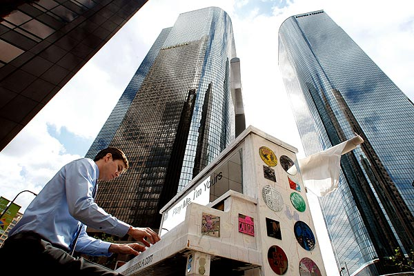
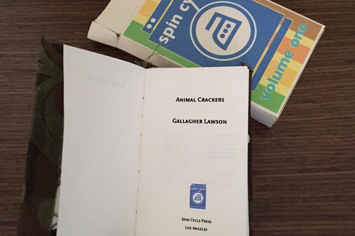

Gallagher Lawson is a graduate of UC Riverside’s Palm Desert MFA program. He has worked as a travel writer and technical writer, and plays classical piano. He lives in Los Angeles.
When I’m not writing, I love to play the piano. I’ve played since I was twelve. My favorite period of music is the early twentieth century – Samuel Barber, Prokofiev, Shostakovich, Ravel, and more. I was once featured in the LA Times when they covered Play Me, I’m Yours, a program that places pianos in public spaces. Here I am in downtown LA:
I also love art. Years ago, my short story collection Animal Crackers was printed as limited-edition, handmade books that were sold out of vending machine at an LA art show. The books were the size of a miniature box of detergent. They looked like this:
And, occasionally I compose music. Some of my songs can be found on Soundcloud here.